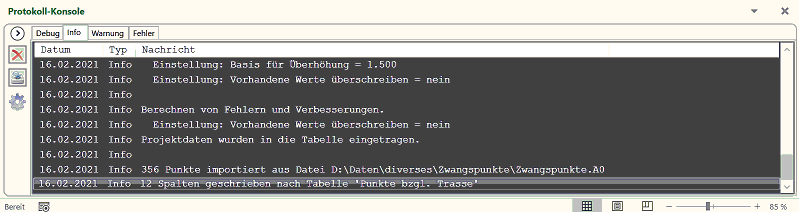

Es wird die Protokoll-Konsole angezeigt. Diese enthält vier Protokolle mit
unterschiedlicher Informationsdichte. Das Debug-Protokoll ist nur für die
ambitionierte Fehlersuche gedacht, das "Protokoll" hingegen für Anwender.
Verhalten
Das Protokollieren eines Fehlers hat die sofortige Aktivierung des Fehlerprotokolls
innerhalb der Konsole zur Folge, so dass der Fehler beim Ansehen des Protokolls
ins Auge fällt.
Ist die Option "Zeige Konsole bei neuen Fehlern" aktiv, so wird außerdem die
Protokoll-Konsole automatisch geöffnet.
Einstellungen
Es können "Datum", "Zeit", "Typ" und "Nachrichten-Quelle" automatisch
der
eigentlichen Meldung vorangestellt werden.
Aus Gründen der Performance kann auch die Größe des Protokolls begrenzt
werden.
